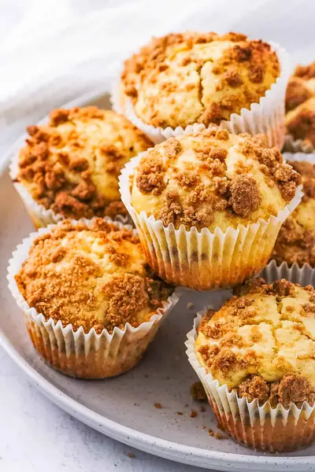

Cinnamon Streusel Muffins

Ingredients
- ⅔ cup all purpose flour
- ⅓ cup brown sugar (firmly packed)
- 1 tsp cinnamon (ground)
- ¼ cup butter (melted)
- 2 cups all purpose flour
- 1 tsp baking powder
- ¼ tsp salt
- ½ cup butter (softened)
- ¾ cup sugar
- 2 eggs
- 1 tsp vanilla extract
- 1½ cup buttermilk
Steps
- Preheat the oven top 350 degrees F / 180 C. Line a 12 hole muffin tin with muffin liners.
- In a small mixing bowl combine all of the streusel topping ingredients except the butter, whisk to combine.
- Pour the butter into the flour mixture and mix well. The streusel topping is ready when its crumbly and sticks together when squeezed. Place in the fridge while preparing the muffin batter.
- To prepare the muffin batter whisk together the all purpose flour, baking powder and salt in a mixing bowl, set aside.
- Add the softened butter and sugar to the bowl of a stand mixer, beat with a paddle attachment until light and fluffy.
- Next, add one egg at a time along with the vanilla extract, beating until well combined.
- Remove the bowl from the stand mixer.
- Add half of the buttermilk and then half of the dry ingredients, gently mix until just combined.
- Next, mix in the remaining buttermilk and dry ingredients until just combined. Set aside.
- To assemble the muffins sprinkle a teaspoon of the streusel topping over the base of each muffin liner.
- Fill each muffin liner half way with batter.
- Sprinkle another teaspoon of streusel mixture.
- Cover the filling with another scoop of batter.
- Finish each muffin with a layer of topping mixture.
- Bake in the preheated oven for 20 minutes.
- When cooked remove from the tray and cool completely on a cooling rack.
Recipe by Anjali Shah · The Picky Eater, from The Picky Eater. Saved here for personal use; the original has the full notes, tips and photos. Open original